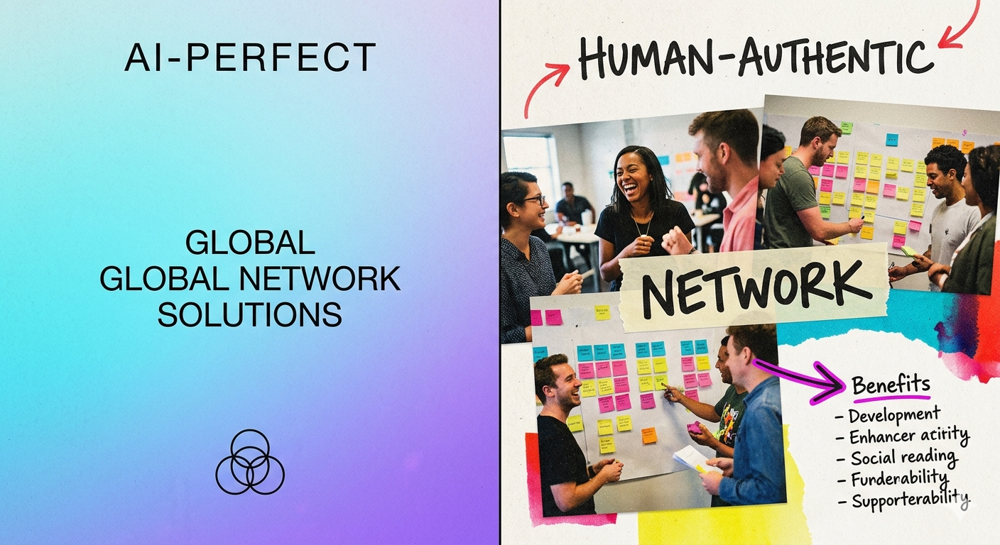

Marketing

Why “Messy” Design is Winning in 2026: The Rise of the Anti-AI Aesthetic
Stop chasing the grid. Why "Imperfect by Design" is the top marketing trend of 2026. Read the breakdown here.
M
All articles live on Medium
Follow along for new pieces on marketing, design, and everything in between.